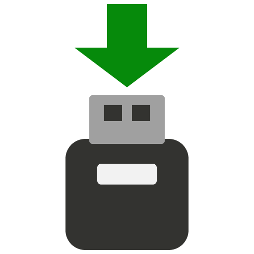

To update the software on your Rosetta system, you will need to be connected to the Internet. This is typically done via your home Wi-Fi network (Wi-Fi setup instructions).
- Do NOT connect anything to your Rosetta system using the network switch inside the box. This could cause performance issues on the system.
Once you are connected to the Internet, you can update your Rosetta system.
Updating Rosetta
To update the Rosetta program, use Update Rosetta on the Applications menu.
The update program will download any available upgrades for the following:
- Updates to the Rosetta code
- Any changes and updates to the config files within Rosetta
- Updates to LinuxCNC
- Updates to the operating system (Debian Linux)
- Updates to the virus scanning system (ClamAV)
and then apply these upgrades to your system.
|
|
Using the Applications menu
- Click on Applications at the top left corner of the screen
- Click on the arrow to the right of Rosetta
- Click on Update Rosetta (the one with a green up arrow)
| Applications | |
 Rosetta > Rosetta >
| Rosetta
|
 Rosetta Settings Rosetta Settings
| |
|  Backup Rosetta | |
 Update Rosetta Update Rosetta
| |
 Geometric Chuck Designer Geometric Chuck Designer
| |
 Rosette Designer Rosette Designer
| |
Note: It is a good practice to restart your computer after updating it. Close Rosetta, use Shut Down at the bottom of the Applications menu, wait until the screen has gone dark and then 10 seconds more, then switch the power off and back on.
Additional Notes
If you run the update program too soon after starting up your system, you may encounter an error. This is because the virus scanning is still running.
Wait 30 minutes and run it again. This should clear up any issues.